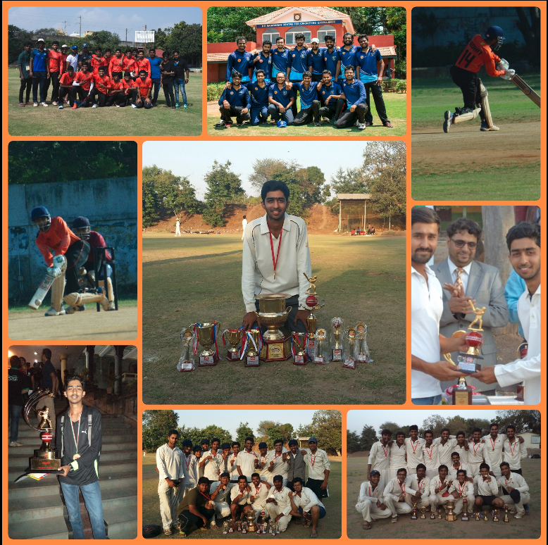

(1) Importance of Sports in My Life
Apart from being a research scholar, I am a sports enthusiast (mainly cricket). I feel every research scholar should involve in some extra curricular activity to help refresh their mind which in turn would help them with their research work. For me, sports is as important as my research. It actually helps me with my research work.
I have been playing cricket for almost 12 years now and it has been a wonderful journey. I started playing for my school and my club, then represented my college during my undergrad years and finally played for IIT Madras in my Masters. It has been a journey filled with excitment, joy, nervousness, disappointment and lot more. Apart from cricket, I also enjoy playing badminton, table tennis, tennis, and football.

(2) Love For Sanskrit
Sanskrit is one of the oldest languages in the world and has a rich history. I enjoy reading sanskrit texts especially shlokas. Some of my favourite Sanskrit Shlokas
(3) Convocation Ceremony
(4) Motivational Speech
(5) Best of Calvin and Hobbes
(6) The City of Karlsruhe
I have been in Karlsruhe for almost a month now, and I have visited a few places here. I feel lucky to be here during the Christmas time since the entire city is in a festive mode. Also, we had snow this weekend for the first time, and everyone was out to welcome it. I am really enjoying my time here. Some of the moments that I captured can be found here
.(7) Europe Trip
Christmas is the most important festival in Europe and it's also the best time to visit different parts of it. During my vacation, I got a chance to see the cities of Brussels, Brugge, and Gent in Belgium and I also visited Amsterdam in Netherlands. I would like to share my experience about the different cities and their culture.
(a) Brussels
For most part of my vacation I was in Brussels. Brussels is the capital of Belgium and is also the administrative center of the European Union. Firstly, I visited the Grand Palace (huge city square completely encircled by elegant historic buildings dating back to the 14th century) completely decorated with beautiful lightings. The City Center, close to the Grand Palace, is the main market place of the city which would attract a lot of people who love shopping. The famous French Fries basically come from Belgium, so you should definitely have one of those while you are there. The other places I visited in Brussels were the Atomium and Mini-Europe. Atomium is a giant stainless steel atom where the particles are connected by escalators, with exhibitions and views from 92m. The exhibitions depict various atomic models and their history and any science lover woud have a great time visiting Atomium. Mini-Europe is a miniature park with Europe's landmarks created on a scale of 1:25. The park has several interesting facts about the landmarks in differnt parts of Europe. This was all about Brussels. Brussels Gallery
(b) Amsterdam